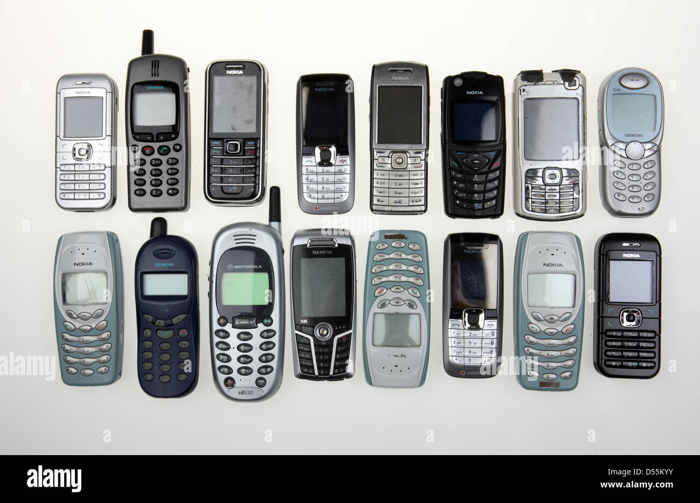
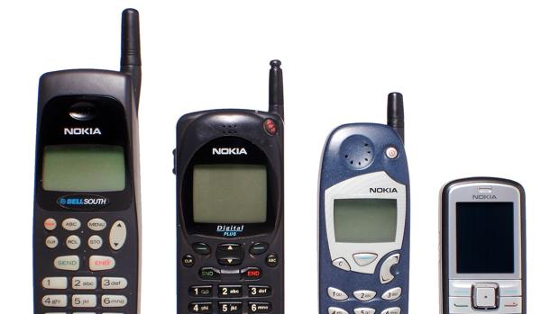
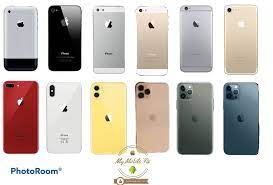

La llegada del teléfono celular al mundo

El primer teléfono móvil fue el Motorola DynaTAC 8000X. Este celular fue el primero en colocarse en el mercado en marzo de 1984. Su forma se asemejaba a la de un ladrillo, pues sus dimensiones eran de 33 centímetros (12.9 pulg) de alto, 8,9 (3.5 pulg) de grosor y 4,5 (1.7 pulg) de ancho. Además, pesaba 800 gramos (1.8 lb).En 1973, Martin Cooper, director corporativo de Investigación y Desarrollo de Motorola, cogió su Motorola DynaTAC 8000X en plena calle en Nueva York y realizó la primera llamada con un teléfono móvil de la historia
Motorola
La marca motorola fue la pionera de los celulares dándose a conocer como la primera compañía de crear un sistema de comunicación portatil.Como todo, al pasar los años la compañía fue buscando la comodidad para los consumidores y así creando los teléfonos un poco mas cómodos como los modelos a continuación:
- Motorola Startac
- Motorola Razr V3
- Motorola Milestone
Nokia
Dos años después de la llegada del primer teléfono al mundo varias compañías como es en este caso Nokia lanzaron sus propios modelos. Gracias al lanzamieto del Mobira Talkman de Nokia comenzó la carrera del éxito para la industria.
Como todos ellos también quisieron implemetar nuevas tecnologías a sus dispositivos portátiles para la comodidad del cliente. Aunque Motorola haya sido la primera compañía en lanzar el teléfono Nokia es considerada la mas influyendte en el mundo de los móviles.
- Nokia 3210
- Nokia 2146
- Nokia 3310
Iphone
El iPhone 2G fue nombrado por la Revista Times el invento del año (2007) después de que Steve Jobs presentara ese primer iPhone en la conferencia Mac World de San Francisco, California. Fue un producto innovador que logró integrar, en un solo dispositivo, un teléfono móvil, un reproductor de música y una conexión estable a internet a través de Wi-Fi. El también conocido como iPhone 1 o iPhone 2G, contaba, además, con una pantalla táctil inédita, una IPS de 5 pulgadas.
Apple cumplió 10 años en la evolución del iPhone, y en el 2017 lanzó los iPhone 8, 8 Plus y el esperado iPhone X, con el que la compañía rindió homenaje, la década cumplida. Según el portal La Manzana Mordida, especializado en Apple, aquel equipo significó el mayor cambio de un iPhone, puesto que eliminó casi por completo los bordes, dejando un frontal en el que la pantalla OLED de 5,8 pulgadas es la auténtica protagonista. También sacó del todo el tradicional botón de home.
Aquí nos podemos dar cuenta lo importante que tiene la tecnología para el mundo. Lo evolución nativa que puede ser desde tener un teléfono (Motorol aDynaTAC 8000x) que pesaba 800 gramos (1.8 lb) no muy cómodo, ha tener lo que conocemos hoy en día como uno de los celulares mas vendidos del mundo (iPhone 11) que pesa alrededor de 190 gramos (o.42 lb) y que en comparación con el primer teléfono es un dispositivo completamente equipado para el uso diario.